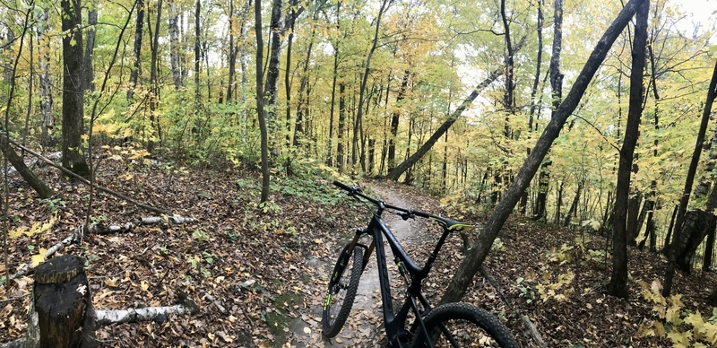

Current Temperature:
°F
Current Wind Speed:
mph
Today's Forecast:
Ten-Day Forecast
| Day 1 | Day 2 | Day 3 | Day 4 | Day 5 | Day 6 | Day 7 | Day 8 | Day 9 | Day 10 |
|---|---|---|---|---|---|---|---|---|---|
| °F | °F | °F | °F | °F | °F | °F | °F | °F | °F |
Battle Creek Regional Park, St. Paul

Just two hours away from Franklin, MN, you can find one of the best mountain biking trails in Minnesota.
Battle Creek Regional Park Mountain Bike Trails provides various difficulties adequate for different riders. Those who wants to enjoy the scenary and relax could go on the Paved Trails, those advanced riders wanting some fun could go on trails that are known to be one of the extreme trails in the nation. The park has over 20 different types of trails available so you could easily find one that you like the best.
Some of the trails includes:
Goat (0.6 mi), Jesus Saves (0.7 mi), North Rim / Dingo (0.6 mi)
Source: MTB PROJECT